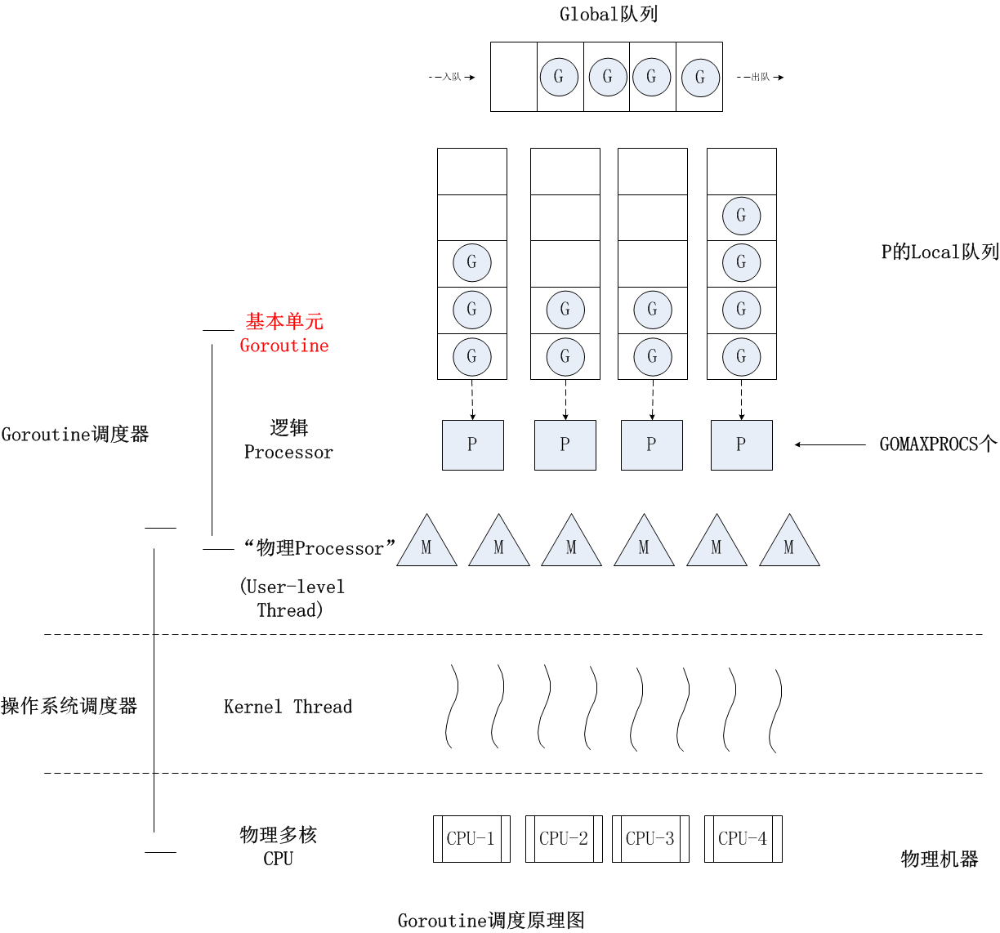

- 00 开篇词 这样入门Go，才能少走弯路.md.html
- 01 前世今生：你不得不了解的Go的历史和现状.md.html
- 02 拒绝“Hello and Bye”：Go语言的设计哲学是怎么一回事？.md.html
- 03 配好环境：选择一种最适合你的Go安装方法.md.html
- 04 初窥门径：一个Go程序的结构是怎样的？.md.html
- 05 标准先行：Go项目的布局标准是什么？.md.html
- 06 构建模式：Go是怎么解决包依赖管理问题的？.md.html
- 07 构建模式：Go Module的6类常规操作.md.html
- 08 入口函数与包初始化：搞清Go程序的执行次序.md.html
- 09 即学即练：构建一个Web服务就是这么简单.md.html
- 10 变量声明：静态语言有别于动态语言的重要特征.md.html
- 11 代码块与作用域：如何保证变量不会被遮蔽？.md.html
- 12 基本数据类型：Go原生支持的数值类型有哪些？.md.html
- 13 基本数据类型：为什么Go要原生支持字符串类型？.md.html
- 14 常量：Go在“常量”设计上的创新有哪些？.md.html
- 15 同构复合类型：从定长数组到变长切片.md.html
- 16 复合数据类型：原生map类型的实现机制是怎样的？.md.html
- 17 复合数据类型：用结构体建立对真实世界的抽象.md.html
- 18 控制结构：if的“快乐路径”原则.md.html
- 19 控制结构：Go的for循环，仅此一种.md.html
- 20 控制结构：Go中的switch语句有哪些变化？.md.html
- 21 函数：请叫我“一等公民”.md.html
- 22 函数：怎么结合多返回值进行错误处理？.md.html
- 23 函数：怎么让函数更简洁健壮？.md.html
- 24 方法：理解“方法”的本质.md.html
- 25 方法：方法集合与如何选择receiver类型？.md.html
- 26 方法：如何用类型嵌入模拟实现“继承”？.md.html
- 27 即学即练：跟踪函数调用链，理解代码更直观.md.html
- 28 接口：接口即契约.md.html
- 29 接口：为什么nil接口不等于nil？.md.html
- 30 接口：Go中最强大的魔法.md.html
- 31 并发：Go的并发方案实现方案是怎样的？.md.html
- 32 并发：聊聊Goroutine调度器的原理.md.html
- 33 并发：小channel中蕴含大智慧.md.html
- 34 并发：如何使用共享变量？.md.html
- 35 即学即练：如何实现一个轻量级线程池？.md.html
- 36 打稳根基：怎么实现一个TCP服务器？（上）.md.html
- 37 代码操练：怎么实现一个TCP服务器？（中）.md.html
- 38 成果优化：怎么实现一个TCP服务器？（下）.md.html
- 39 驯服泛型：了解类型参数.md.html
- 40 驯服泛型：定义泛型约束.md.html
- 41 驯服泛型：明确使用时机.md.html
- 元旦快乐 这是一份暂时停更的声明.md.html
- 加餐 作为Go Module的作者，你应该知道的几件事.md.html
- 加餐 如何拉取私有的Go Module？.md.html
- 加餐 我“私藏”的那些优质且权威的Go语言学习资料.md.html
- 加餐 聊聊Go 1.17版本的那些新特性.md.html
- 加餐 聊聊Go语言的指针.md.html
- 加餐 聊聊最近大热的Go泛型.md.html
- 大咖助阵 叶剑峰：Go语言中常用的那些代码优化点.md.html
- 大咖助阵 大明：Go泛型，泛了，但没有完全泛.md.html
- 大咖助阵 孔令飞：从小白到“老鸟”，我的Go语言进阶之路.md.html
- 大咖助阵 徐祥曦：从销售到分布式存储工程师，我与 Go 的故事.md.html
- 大咖助阵 曹春晖：聊聊 Go 语言的 GC 实现.md.html
- 大咖助阵 海纳：聊聊语言中的类型系统与泛型.md.html
- 期中测试 一起检验下你的学习成果吧.md.html
- 用户故事 罗杰：我的Go语言学习之路.md.html
- 结束语 和你一起迎接Go的黄金十年.md.html
- 结课测试 快来检验下你的学习成果吧！.md.html
- 捐赠
32 并发：聊聊Goroutine调度器的原理
你好，我是Tony Bai。
上一讲我们学习了并发的基本概念和Go的并发方案，也就是Goroutine的一些基本使用和注意事项。对于大多数Gopher来说，这些内容作为Go并发入门已经是足够了。
但毕竟Go没有采用基于线程的并发模型，可能很多Gopher都好奇Go运行时究竟是如何将一个个Goroutine调度到CPU上执行的。当然，Goroutine的调度本来是Go语言核心开发团队才应该关注的事情，大多数Gopher们无需关心。但就我个人的学习和实践经验而言，我觉得了解Goroutine的调度模型和原理，能够帮助我们编写出更高质量的Go代码。
因此，在这一讲中，我想和你一起简单探究一下Goroutine调度器的原理和演化历史。
Goroutine调度器
提到“调度”，我们首先想到的就是操作系统对进程、线程的调度。操作系统调度器会将系统中的多个线程按照一定算法调度到物理CPU上去运行。
前面我们也提到，传统的编程语言，比如C、C++等的并发实现，多是基于线程模型的，也就是应用程序负责创建线程（一般通过libpthread等库函数调用实现），操作系统负责调度线程。当然，我们也说过，这种传统支持并发的方式有很多不足。为了解决这些问题，Go语言中的并发实现，使用了Goroutine，代替了操作系统的线程，也不再依靠操作系统调度。
Goroutine占用的资源非常小，上节课我们也说过，每个Goroutine栈的大小默认是2KB。而且，Goroutine调度的切换也不用陷入（trap）操作系统内核层完成，代价很低。因此，一个Go程序中可以创建成千上万个并发的Goroutine。而将这些Goroutine按照一定算法放到“CPU”上执行的程序，就被称为Goroutine调度器（Goroutine Scheduler），注意，这里说的“CPU”打了引号。
不过，一个Go程序对于操作系统来说只是一个用户层程序，操作系统眼中只有线程，它甚至不知道有一种叫Goroutine的事物存在。所以，Goroutine的调度全要靠Go自己完成。那么，实现Go程序内Goroutine之间“公平”竞争“CPU”资源的任务，就落到了Go运行时（runtime）头上了。要知道在一个Go程序中，除了用户层代码，剩下的就是Go运行时了。
于是，Goroutine的调度问题就演变为，Go运行时如何将程序内的众多Goroutine，按照一定算法调度到“CPU”资源上运行的问题了。
可是，在操作系统层面，线程竞争的“CPU”资源是真实的物理CPU，但在Go程序层面，各个Goroutine要竞争的“CPU”资源又是什么呢？
Go程序是用户层程序，它本身就是整体运行在一个或多个操作系统线程上的。所以这个答案就出来了：Goroutine们要竞争的“CPU”资源就是操作系统线程。这样，Goroutine调度器的任务也就明确了：将Goroutine按照一定算法放到不同的操作系统线程中去执行。
那么，Goroutine调度器究竟是以怎样的算法模型，将Goroutine调度到不同的操作系统线程上去的呢？我们继续向下看。
Goroutine调度器模型与演化过程
Goroutine调度器的实现不是一蹴而就的，它的调度模型与算法也是几经演化，从最初的G-M模型、到G-P-M模型，从不支持抢占，到支持协作式抢占，再到支持基于信号的异步抢占，Goroutine调度器经历了不断地优化与打磨。
首先我们来看最初的G-M模型。
2012年3月28日，Go 1.0正式发布。在这个版本中，Go开发团队实现了一个简单的Goroutine调度器。在这个调度器中，每个Goroutine对应于运行时中的一个抽象结构：G(Goroutine) ，
而被视作“物理CPU”的操作系统线程，则被抽象为另外一个结构：M(machine)。
调度器的工作就是将G调度到M上去运行。为了更好地控制程序中活跃的M的数量，调度器引入了GOMAXPROCS变量来表示Go调度器可见的“处理器”的最大数量。
这个模型实现起来比较简单，也能正常工作，但是却存在着诸多问题。前英特尔黑带级工程师、现谷歌工程师德米特里·维尤科夫（Dmitry Vyukov）在其《Scalable Go Scheduler Design》一文中指出了G-M模型的一个重要不足：限制了Go并发程序的伸缩性，尤其是对那些有高吞吐或并行计算需求的服务程序。
这个问题主要体现在这几个方面：
- 单一全局互斥锁
(Sched.Lock)和集中状态存储的存在，导致所有Goroutine相关操作，比如创建、重新调度等，都要上锁； - Goroutine传递问题：M经常在M之间传递“可运行”的Goroutine，这导致调度延迟增大，也增加了额外的性能损耗；
- 每个M都做内存缓存，导致内存占用过高，数据局部性较差；
- 由于系统调用（syscall）而形成的频繁的工作线程阻塞和解除阻塞，导致额外的性能损耗。
为了解决这些问题，德米特里·维尤科夫又亲自操刀改进了Go调度器，在Go 1.1版本中实现了G-P-M调度模型和work stealing算法，这个模型一直沿用至今。模型如下图所示：

有人说过：“计算机科学领域的任何问题都可以通过增加一个间接的中间层来解决”，德米特里·维尤科夫的G-P-M模型恰是这一理论的践行者。你可以看到，德米特里·维尤科夫通过向G-M模型中增加了一个P，让Go调度器具有很好的伸缩性。
P是一个“逻辑Proccessor”，每个G（Goroutine）要想真正运行起来，首先需要被分配一个P，也就是进入到P的本地运行队列（local runq）中。对于G来说，P就是运行它的“CPU”，可以说：在G的眼里只有P。但从Go调度器的视角来看，真正的“CPU”是M，只有将P和M绑定，才能让P的runq中的G真正运行起来。
G-P-M模型的实现算是Go调度器的一大进步，但调度器仍然有一个令人头疼的问题，那就是不支持抢占式调度，这导致一旦某个G中出现死循环的代码逻辑，那么G将永久占用分配给它的P和M，而位于同一个P中的其他G将得不到调度，出现“饿死”的情况。
更为严重的是，当只有一个P（GOMAXPROCS=1）时，整个Go程序中的其他G都将“饿死”。于是德米特里·维尤科夫又提出了《Go Preemptive Scheduler Design》并在Go 1.2中实现了基于协作的“抢占式”调度。
这个抢占式调度的原理就是，Go编译器在每个函数或方法的入口处加上了一段额外的代码(runtime.morestack_noctxt)，让运行时有机会在这段代码中检查是否需要执行抢占调度。
这种解决方案只能说局部解决了“饿死”问题，只在有函数调用的地方才能插入“抢占”代码（埋点），对于没有函数调用而是纯算法循环计算的G，Go调度器依然无法抢占。
比如，死循环等并没有给编译器插入抢占代码的机会，这就会导致GC在等待所有Goroutine停止时的等待时间过长，从而导致GC延迟，内存占用瞬间冲高；甚至在一些特殊情况下，导致在STW（stop the world）时死锁。
为了解决这些问题，Go在1.14版本中接受了奥斯汀·克莱门茨（Austin Clements）的提案，增加了对非协作的抢占式调度的支持，这种抢占式调度是基于系统信号的，也就是通过向线程发送信号的方式来抢占正在运行的Goroutine。
除了这些大的迭代外，Goroutine的调度器还有一些小的优化改动，比如通过文件I/O poller减少M的阻塞等。
Go运行时已经实现了netpoller，这使得即便G发起网络I/O操作，也不会导致M被阻塞（仅阻塞G），也就不会导致大量线程（M）被创建出来。
但是对于文件I/O操作来说，一旦阻塞，那么线程（M）将进入挂起状态，等待I/O返回后被唤醒。这种情况下P将与挂起的M分离，再选择一个处于空闲状态（idle）的M。如果此时没有空闲的M，就会新创建一个M（线程），所以，这种情况下，大量I/O操作仍然会导致大量线程被创建。
为了解决这个问题，Go开发团队的伊恩·兰斯·泰勒（Ian Lance Taylor）在Go 1.9中增加了一个针对文件I/O的Poller的功能，这个功能可以像netpoller那样，在G操作那些支持监听（pollable）的文件描述符时，仅会阻塞G，而不会阻塞M。不过这个功能依然不能对常规文件有效，常规文件是不支持监听的（pollable）。但对于Go调度器而言，这也算是一个不小的进步了。
从Go 1.2以后，Go调度器就一直稳定在G-P-M调度模型上，尽管有各种优化和改进，但也都是基于这个模型之上的。那未来的Go调度器会往哪方面发展呢？德米特里·维尤科夫在2014年9月提出了一个新的设计草案文档：《NUMA‐aware scheduler for Go》，作为对未来Goroutine调度器演进方向的一个提议，不过至今似乎这个提议也没有列入开发计划。
通过前面对Goroutine调度器演化的分析，你可以看到，目前G-M模型已经废弃，NUMA调度模型尚未实现，那么现在我们要理解如今的Goroutine调度，只需要学习G-P-M模型就可以了，接下来我们就来看看G-P-M模型下Goroutine的调度原理。
深入G-P-M模型
Go语言中Goroutine的调度、GC、内存管理等是Go语言原理最复杂、最难懂的地方，随便拿出一个都可以讲上几节课，并且这三方面的内容随着Go版本的演进也在不断更新。因为我们是入门课，所以这里我就只基于Go 1.12.7版本（支持基于协作的抢占式调度）给你粗略介绍一下基于G-P-M模型的调度原理，如果你还对这方面感兴趣，可以基于这些介绍深入到相关的Go源码中去，深入挖掘细节。
G、P和M
关于G、P、M的定义，我们可以参见$GOROOT/src/runtime/runtime2.go这个源文件。你可以看到，G、P、M这三个结构体定义都是大块头，每个结构体定义都包含十几个甚至二三十个字段。更不用说，像调度器这样的核心代码向来很复杂，考虑的因素也非常多，代码“耦合”成一坨。不过从复杂的代码中，我们依然可以看出来G、P、M的各自的大致用途，我们这里简要说明一下：
- G: 代表Goroutine，存储了Goroutine的执行栈信息、Goroutine状态以及Goroutine的任务函数等，而且G对象是可以重用的；
- P: 代表逻辑processor，P的数量决定了系统内最大可并行的G的数量，P的最大作用还是其拥有的各种G对象队列、链表、一些缓存和状态；
- M: M代表着真正的执行计算资源。在绑定有效的P后，进入一个调度循环，而调度循环的机制大致是从P的本地运行队列以及全局队列中获取G，切换到G的执行栈上并执行G的函数，调用goexit做清理工作并回到M，如此反复。M并不保留G状态，这是G可以跨M调度的基础。
我这里也给出了G、P、M定义的代码片段（注意：我们这里使用的是Go 1.12.7版本，随着Go演化，结构体中的字段定义可能会有不同），你也可以看一看：
//src/runtime/runtime2.go
type g struct {
stack stack // offset known to runtime/cgo
sched gobuf
goid int64
gopc uintptr // pc of go statement that created this goroutine
startpc uintptr // pc of goroutine function
... ...
}
type p struct {
lock mutex
id int32
status uint32 // one of pidle/prunning/...
mcache *mcache
racectx uintptr
// Queue of runnable goroutines. Accessed without lock.
runqhead uint32
runqtail uint32
runq [256]guintptr
runnext guintptr
// Available G's (status == Gdead)
gfree *g
gfreecnt int32
... ...
}
type m struct {
g0 *g // goroutine with scheduling stack
mstartfn func()
curg *g // current running goroutine
... ...
}
而Goroutine调度器的目标，就是公平合理地将各个G调度到P上“运行”，下面我们重点看看G是如何被调度的。
G被抢占调度
我们先来说常规情况，也就是如果某个G没有进行系统调用（syscall）、没有进行I/O操作、没有阻塞在一个channel操作上，调度器是如何让G停下来并调度下一个可运行的G的呢？
答案就是：G是被抢占调度的。
前面说过，除非极端的无限循环，否则只要G调用函数，Go运行时就有了抢占G的机会。Go程序启动时，运行时会去启动一个名为sysmon的M（一般称为监控线程），这个M的特殊之处在于它不需要绑定P就可以运行（以g0这个G的形式），这个M在整个Go程序的运行过程中至关重要，你可以看下我对sysmon被创建的部分代码以及sysmon的执行逻辑摘录：
//$GOROOT/src/runtime/proc.go
// The main goroutine.
func main() {
... ...
systemstack(func() {
newm(sysmon, nil)
})
.... ...
}
// Always runs without a P, so write barriers are not allowed.
//
//go:nowritebarrierrec
func sysmon() {
// If a heap span goes unused for 5 minutes after a garbage collection,
// we hand it back to the operating system.
scavengelimit := int64(5 * 60 * 1e9)
... ...
if .... {
... ...
// retake P's blocked in syscalls
// and preempt long running G's
if retake(now) != 0 {
idle = 0
} else {
idle++
}
... ...
}
}
我们看到，sysmon每20us~10ms启动一次，sysmon主要完成了这些工作：
- 释放闲置超过5分钟的span内存；
- 如果超过2分钟没有垃圾回收，强制执行；
- 将长时间未处理的netpoll结果添加到任务队列；
- 向长时间运行的G任务发出抢占调度；
- 收回因syscall长时间阻塞的P；
我们看到sysmon将“向长时间运行的G任务发出抢占调度”，这个事情由函数retake实施：
// $GOROOT/src/runtime/proc.go
// forcePreemptNS is the time slice given to a G before it is
// preempted.
const forcePreemptNS = 10 * 1000 * 1000 // 10ms
func retake(now int64) uint32 {
... ...
// Preempt G if it's running for too long.
t := int64(_p_.schedtick)
if int64(pd.schedtick) != t {
pd.schedtick = uint32(t)
pd.schedwhen = now
continue
}
if pd.schedwhen+forcePreemptNS > now {
continue
}
preemptone(_p_)
... ...
}
func preemptone(_p_ *p) bool {
mp := _p_.m.ptr()
if mp == nil || mp == getg().m {
return false
}
gp := mp.curg
if gp == nil || gp == mp.g0 {
return false
}
gp.preempt = true //设置被抢占标志
// Every call in a go routine checks for stack overflow by
// comparing the current stack pointer to gp->stackguard0.
// Setting gp->stackguard0 to StackPreempt folds
// preemption into the normal stack overflow check.
gp.stackguard0 = stackPreempt
return true
}
从上面的代码中，我们可以看出，如果一个G任务运行10ms，sysmon就会认为它的运行时间太久而发出抢占式调度的请求。一旦G的抢占标志位被设为true，那么等到这个G下一次调用函数或方法时，运行时就可以将G抢占并移出运行状态，放入队列中，等待下一次被调度。
不过，除了这个常规调度之外，还有两个特殊情况下G的调度方法。
第一种：channel阻塞或网络I/O情况下的调度。
如果G被阻塞在某个channel操作或网络I/O操作上时，G会被放置到某个等待（wait）队列中，而M会尝试运行P的下一个可运行的G。如果这个时候P没有可运行的G供M运行，那么M将解绑P，并进入挂起状态。当I/O操作完成或channel操作完成，在等待队列中的G会被唤醒，标记为可运行（runnable），并被放入到某P的队列中，绑定一个M后继续执行。
第二种：系统调用阻塞情况下的调度。
如果G被阻塞在某个系统调用（system call）上，那么不光G会阻塞，执行这个G的M也会解绑P，与G一起进入挂起状态。如果此时有空闲的M，那么P就会和它绑定，并继续执行其他G；如果没有空闲的M，但仍然有其他G要去执行，那么Go运行时就会创建一个新M（线程）。
当系统调用返回后，阻塞在这个系统调用上的G会尝试获取一个可用的P，如果没有可用的P，那么G会被标记为runnable，之前的那个挂起的M将再次进入挂起状态。
小结
好了，今天的课讲到这里就结束了，现在我们一起来回顾一下吧。
基于Goroutine的并发设计离不开一个高效的生产级调度器。Goroutine调度器演进了十余年，先后经历了G-M模型、G-P-M模型和work stealing算法、协作式的抢占调度以及基于信号的异步抢占等改进与优化，目前Goroutine调度器相对稳定和成熟，可以适合绝大部分生产场合。
现在的G-P-M模型和最初的G-M模型相比，通过向G-M模型中增加了一个代表逻辑处理器的P，使得Goroutine调度器具有了更好的伸缩性。
M是Go代码运行的真实载体，包括Goroutine调度器自身的逻辑也是在M中运行的。
P在G-P-M模型中占据核心地位，它拥有待调度的G的队列，同时M要想运行G必须绑定一个P。一个G被调度执行的时间不能过长，超过特定长的时间后，G会被设置为可抢占，并在下一次执行函数或方法时被Go运行时移出运行状态。
如果G被阻塞在某个channel操作或网络I/O操作上时，M可以不被阻塞，这避免了大量创建M导致的开销。但如果G因慢系统调用而阻塞，那么M也会一起阻塞，但在阻塞前会与P解绑，P会尝试与其他M绑定继续运行其他G。但若没有现成的M，Go运行时会建立新的M，这也是系统调用可能导致系统线程数量增加的原因，你一定要注意这一点。
思考题
为了让你更好理解Goroutine调度原理，我这里留个思考题。请看下面代码：
func deadloop() {
for {
}
}
func main() {
go deadloop()
for {
time.Sleep(time.Second * 1)
fmt.Println("I got scheduled!")
}
}
我的问题是：
在一个拥有多核处理器的主机上，使用Go 1.13.x版本运行这个示例代码，你在命令行终端上是否能看到“I got scheduled!”输出呢？也就是main goroutine在创建deadloop goroutine之后是否能继续得到调度呢？
我们通过什么方法可以让上面示例中的main goroutine，在创建deadloop goroutine之后无法继续得到调度？
欢迎你把这节课分享给更多对Gouroutine调度原理感兴趣的朋友。我是Tony Bai，我们下节课见。
© 2019 - 2023 Liangliang Lee. Powered by gin and hexo-theme-book.